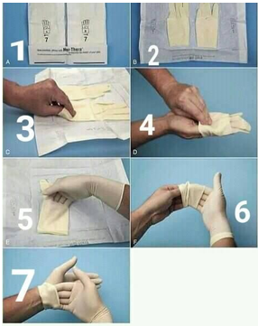
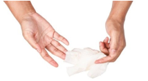

Port de gants
Définition
Le port des gants stériles est nécessaire pour maintenir la stérilité de l'équipement et/ou pour protéger le patient. Dès qu'ils sont contaminés, le soignant doit les retirer avec précaution pour éviter tout contact avec leur surface extérieure contaminée.
Objectif
L'objectif est de mettre des gants stériles sans les contaminer et de les retirer sans disséminer les micro-organismes.
Matériels
Paire de gants stériles à usage unique de taille adaptée à celle de l’utilisateur et dont la date de péremption ne soit pas dépassée.
Attention !
o Changer de gants entre chaque soin pour un même patient.
o Changer systématiquement de gants entre deux patients.
o Le port de gants n’exclut pas le lavage des mains.
o Je consulte le médecin du travail si je constate une réaction indésirable au port des gants.
Déroulement

- Se laver les mains avec un savon antiseptique.
- Ouvrir l’emballage extérieur qui contient l’enveloppe des gants.
- Saisir l’enveloppe des gants, la déposer sur une surface propre et l’ouvrir à l’aide des rebords extérieurs.
- Prendre avec le pouce et l’index le gant droit ou gauche selon la dominance de la main, par la partie retombée de la manchette et enfiler le gant en tirant. Laisser la partie supérieure de gant repliée.
- Enfiler l’autre gant en glissant les doigts de la main gantée sous le revers du poignet de l’autre gant.
- Ajuster le gant sur la main en exerçant une pression ferme sous le revers du gant.
- Ajuster la position des doigts dans les gants sans essayer de mettre en place les poignets, car les risques de contamination sont trop élevés
Retirer les gants

Ces étapes décrivent la procédure pour retirer les gants stériles sans disséminer les micro-organismes :
- 1. Saisir de la main non dominante le gant en le pinçant à l’extrémité supérieure de la manchette.
- 2. Tirer le gant vers le bas en retournant à l’intérieur du gant sur l’extérieur de celui-ci. Garder le gant ainsi enlevé dans la main qui reste gantée.
- 3. Introduire l’index et le majeur de la main dégantée sous le gant en évitant absolument de toucher l’extérieur du gant.
- 4. Retirer le gant de façon à inverser la surface contaminée sur elle-même et sur le premier gant
- 5. Eliminer l’ensemble dans le sac à déchets et effectuer un lavage simple des mains.